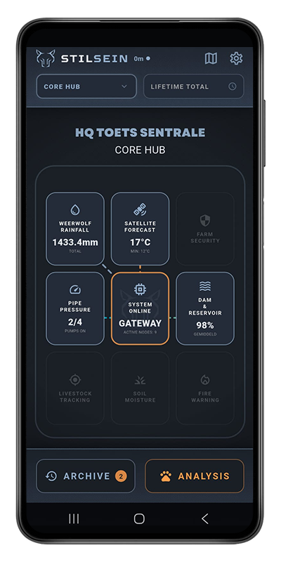
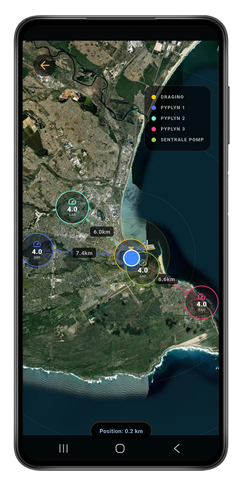
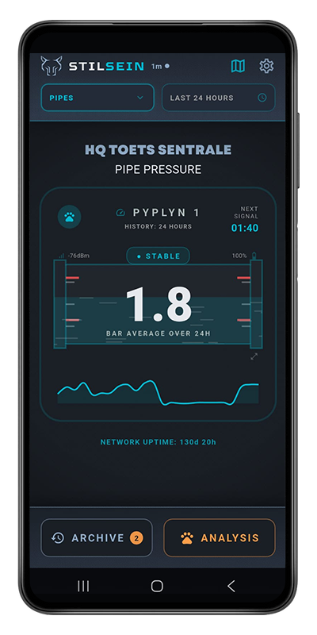
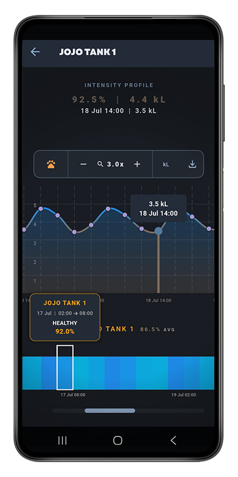
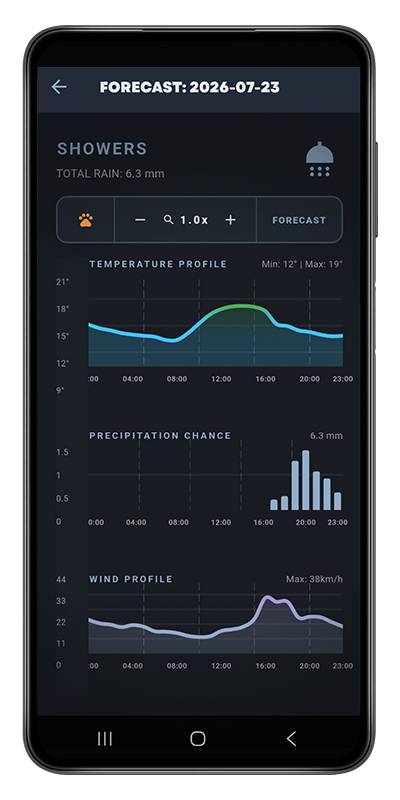
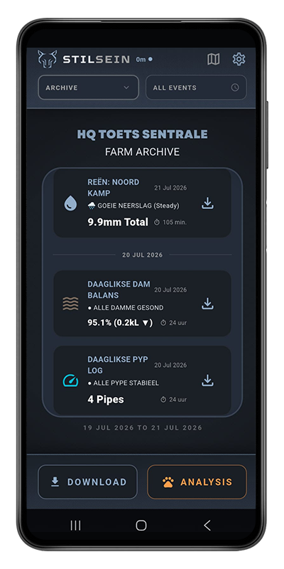
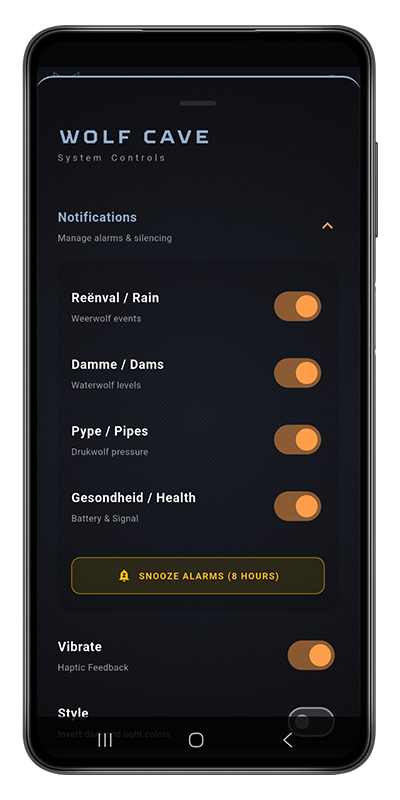
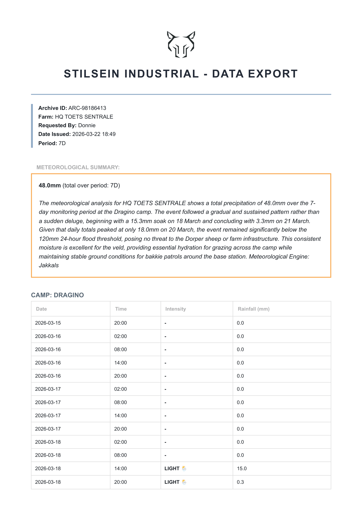

Welcome to the control center. Learn how to navigate your digital farm, interpret advanced telemetry, and configure your Jakkals AI alerts.
The Command Central of your farm. A unified 3x3 grid that gives you an instant overview of your entire operation.

Your farm rendered in geospatial reality. Tap the Gateway node in the center of the Omni-Dashboard, or the Map icon in the bottom taskbar to enter.

The deep-dive view. Accessed by selecting a specific module from the top dropdown, or tapping a specific node on the Map or Omni-Dashboard.

The analytical God-Mode. Designed for deep dives into historical telemetry, leak investigations, and PDF report generation.

Hyper-local meteorological predictions based on your farm's exact GPS coordinates. Accessed from the top-left dropdown menu.

Your farm's permanent historical ledger. Every critical event is safely locked away here for future reference.

The IT Dashboard. Manage your app settings, push notifications, and monitor global hardware health.

Every Sunday night at midnight, Jakkals complies your entire week's telemetry into a beautiful PDF and CSV ledger.
